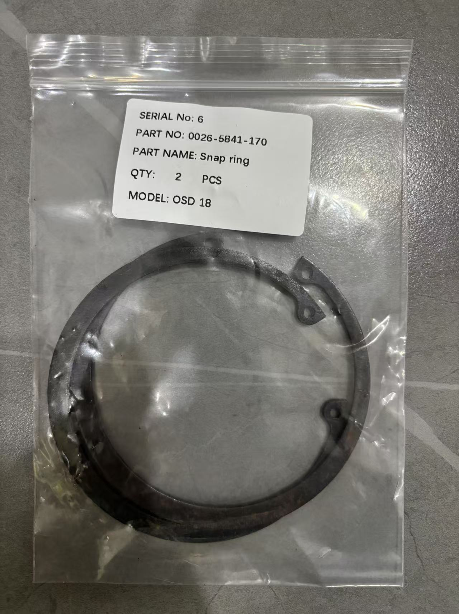

Complete Guide to Alfa Laval & GEA Separator Friction Block Maintenance and Replacement
The Role of Friction Blocks in Separators
Centrifugal separators operate at bowl speeds of 5,000 to 9,000 RPM. Such high rotational speeds cannot be driven directly by the motor — doing so would cause excessive starting current and damage to both the motor and drive system. Therefore, separators universally employ a friction coupling as a flexible connection between the motor and the drive shaft.
The core component of the friction coupling is the friction block (also called friction lining). Its working principle:
- After motor startup, the friction disc on the motor shaft begins rotating at high speed
- Friction blocks are installed inside the friction drum on the drive shaft side, initially with clearance from the friction disc
- As the friction disc speeds up, centrifugal force pushes the friction blocks outward against the inner wall of the friction drum
- Friction gradually increases, transmitting motor power to the drive shaft, causing the bowl to accelerate gradually
- Once the bowl reaches rated speed, the friction blocks and friction disc lock completely, achieving synchronous rotation

Advantages of this progressive transmission:
- Motor protection — Avoids excessive current from direct full-load starting
- Gear protection — Reduces impact loads on the gearbox, extending gear life
- Smooth acceleration — The bowl typically takes 3-6 minutes to reach rated speed, avoiding hydraulic shock
Causes of Friction Block Wear
Friction blocks experience sliding friction with the friction disc/drum during every startup, so wear is an unavoidable normal consumption. Main factors affecting wear rate:
| Factor | Impact | Explanation |
|---|---|---|
| Start frequency | Frequent starts accelerate wear | Each start/stop = one complete friction cycle |
| Block material | OEM parts have best wear resistance | Non-OEM parts have mismatched hardness/friction coefficient |
| Oil contamination | Oil reduces friction force | Causes slipping, extending friction time |
| Voltage fluctuation | Low voltage accelerates wear | Insufficient motor torque, longer acceleration time |
| Bowl imbalance | Vibration intensifies wear | Imbalance causes additional radial force |
| Ambient temperature | High temperature accelerates aging | Friction material becomes brittle under heat |
Alfa Laval Separator Friction Blocks
Applicable Models
Alfa Laval separator friction blocks cover their main marine and industrial models:
- P Series: P605, P615, P620, P640, etc.
- S Series: S815, S821, S835, S861, etc.
- M Series: MOPX, MAPX (legacy models)
- E Series: EL5, EL7 (compact models)
Maintenance Intervals
Alfa Laval officially recommended friction block inspection and replacement intervals:
| Inspection Item | Interval | Notes |
|---|---|---|
| Visual inspection of block thickness | Every 2,000 hours | Combined with intermediate service kit |
| Measure block thickness | Every 4,000 hours | Use caliper for precise measurement |
| Replace friction blocks | Below minimum thickness or 8,000 hours | Whichever comes first |
| Inspect friction disc surface | Each friction block replacement | Check for grooves, scorching |
Thickness Criteria
Alfa Laval friction block thickness standards vary by model, general guidelines:
- New block thickness: Approximately 8-12mm (varies by model)
- Minimum allowable thickness: Typically 3-4mm
- Replacement warning threshold: Prepare spares when thickness falls below 5mm
Note: Refer to the specific model's Product Manual or Service Manual for exact thickness standards, as values differ between models.

GEA Separator Friction Blocks
Applicable Models
GEA (Westfalia) separator friction blocks mainly cover:
- OSD Series: OSD2, OSD18, OSD30, OSD35, etc.
- OSC Series: OSC30, etc.
- NT Series: NT50, NT80, etc. (selected models)
- Legacy Models: OTA, OAD series
Maintenance Intervals
GEA Westfalia friction block maintenance intervals are generally consistent with Alfa Laval:
| Inspection Item | Interval | Notes |
|---|---|---|
| Visual inspection | Every 2,000 hours | Check wear uniformity |
| Precise measurement | Every 4,000 hours | Record wear rate |
| Replace friction blocks | Below minimum thickness | Refer to service manual for specific values |
| Inspect friction drum interior | Each replacement | Check for abnormal wear |

Friction Block Replacement Procedure
The following is a general friction block replacement procedure applicable to most Alfa Laval and GEA models. Always follow the manufacturer's service manual for specific operations.
Preparation
- Disconnect power — Ensure motor is fully de-energized; post "Do Not Energize" warning tag
- Prepare tools — Hex wrenches, caliper, puller, cleaning supplies
- Prepare parts — New friction block set, seals, grease
- Record information — Photograph pre-disassembly condition, record operating hours
Disassembly Steps
- Remove motor guard — Loosen fastening bolts, remove coupling guard cover
- Mark relative positions — Mark motor shaft and drive shaft for alignment during reassembly
- Remove friction drum — Loosen friction drum fastening bolts, use puller to remove drum from drive shaft
- Remove old friction blocks — Take blocks out of the friction drum, observe wear pattern
- Inspect friction disc — Check the friction disc surface condition on the motor shaft
Inspection Points
After disassembly, inspect the following:
- Friction disc surface — Should be smooth without grooves. Deep grooves (>0.5mm) require grinding or replacement
- Friction drum interior — Should have no abnormal wear marks. Blue-purple discoloration indicates severe slipping and overheating
- Springs/clips — Check return springs for fatigue and deformation; replace if elasticity is insufficient
- Bearings — Check bearing clearance at the coupling; replace if abnormal
- Keys and keyways — Check transmission keys for wear and keyways for deformation
Installation Steps
- Clean all components — Thoroughly clean the friction drum interior and friction disc surface with solvent — absolutely no oil residue
- Install new friction blocks — Place new blocks into the friction drum, ensuring correct orientation and proper spring/clip positioning
- Install friction drum — Align keyway, push drum onto drive shaft, tighten fastening bolts
- Manual rotation — Turn motor shaft by hand to feel whether friction block contact with the disc is uniform
- Install guard — Reinstall coupling guard cover, tighten bolts
- No-load test run — Start motor, observe whether acceleration is smooth, check for abnormal noise
Critical Precautions
1. Always Use OEM Parts
Friction block material formulation is each manufacturer's core technology, directly affecting friction coefficient, wear resistance, and thermal stability. Common problems with non-OEM parts:
- Mismatched friction coefficient → Slipping or premature lock-up
- Uneven material hardness → Uneven wear, friction disc damage
- Insufficient heat resistance → Fragmentation at high temperature, debris enters gearbox
- Dimensional tolerance deviations → Installation difficulty or excessive clearance
2. Never Contaminate with Oil
Friction block and friction disc surfaces must never be contaminated with any lubricating oil or grease. Even trace amounts of oil drastically reduce friction coefficient, causing:
- Startup slipping, extended acceleration time
- Abnormal friction block heating, accelerated wear
- Bowl unable to reach rated speed, poor separation performance
During installation:
- Wear clean gloves
- Wipe friction surfaces with specialized solvent
- Avoid oil pipe drips from above during disassembly/assembly
3. Replace as a Complete Set
Always replace friction blocks as a complete set — never replace only the most worn one or two. Reasons:
- Different thickness between new and old blocks → Uneven contact → Vibration
- Different material batches → Friction coefficient variation → Asynchronous lock-up
- Single block replacement → Uneven force distribution → Accelerated wear of other blocks
4. Pay Attention to Installation Direction
Friction blocks have a specific installation orientation. Installing them backwards causes:
- Friction surface unable to properly contact
- Springs/clips unable to return correctly
- Severe cases: damage to friction drum
Before installation, confirm orientation against the service manual. When uncertain, photograph the old parts' installation state for reference.
5. Test Run After Replacement
After installing new friction blocks, a no-load test run is mandatory:
- First startup — Observe whether acceleration time is within normal range (typically 3-6 minutes)
- Listen — Normal sound is a uniform, gradually increasing friction sound. Sharp squealing → shut down immediately
- Measure vibration — Use vibration meter, compare with pre-replacement data
- Check temperature — After 30 minutes of operation, check friction drum housing temperature — should not be hot to touch (<60°C)
- Full-load operation — After no-load is normal, introduce media for full-load operation, confirm separation performance
6. Inspect Related Components Simultaneously
When replacing friction blocks, inspect/replace the following:
| Component | Inspection Content | Recommendation |
|---|---|---|
| Friction disc | Surface grooves, scorching | Deep grooves require grinding or replacement |
| Return springs | Elasticity, deformation | Replace if fatigued or deformed |
| O-rings | Aging, hardening | Must replace every disassembly |
| Gearbox oil | Oil color, metal particles | Friction block fragmentation may contaminate gear oil |
| Motor bearings | Unusual noise, heating | Address simultaneously if abnormal |
Common Faults and Solutions
| Symptom | Possible Cause | Solution |
|---|---|---|
| Significantly longer startup time (>8 min) | Excessive block wear / oil contamination | Measure thickness, replace if needed; clean friction surfaces |
| Bowl cannot reach rated speed | Block slipping / low motor voltage | Check for oil contamination; measure motor voltage |
| Sharp metallic sound during startup | Blocks completely worn through / disc damaged | Stop immediately, inspect blocks and disc |
| Friction drum overheating (>80°C) | Slipping / oil contamination / overload | Stop and inspect, clean or replace blocks |
| Increased vibration | Uneven block wear / improper installation | Check wear uniformity, reinstall or replace |
| Difficulty restarting after frequent power cuts | Friction block thermal fade | Allow cooling before restart; inspect wear condition |
Friction Block Maintenance Checklist
Incorporate the following checklist into your separator periodic maintenance records:
- Record current operating hours
- Visually inspect friction blocks for cracking, detachment
- Measure block thickness with caliper (multi-point, take minimum)
- Compare with previous measurement, calculate wear rate
- Inspect friction disc surface condition (groove depth, scorching)
- Inspect friction drum interior (wear marks, discoloration)
- Check return springs/clips condition
- Check for oil leakage at coupling area
- If replaced, record new block batch number and installation date
- Test run and record acceleration time, vibration value, temperature
Conclusion
Friction blocks may be small, but they are the "first line of defense" for safe separator operation. A friction block worn to its limit can cause reduced separation performance and extended startup times at best, or burn out the motor and damage the gearbox at worst. Whether for Alfa Laval or GEA separators, friction block maintenance should follow three core principles:
- Regular inspection — Visual every 2,000 hours, measurement every 4,000 hours, replacement at 8,000 hours or minimum thickness
- OEM parts — Use manufacturer-certified friction blocks to eliminate safety risks from non-OEM parts
- Proper procedures — Never contaminate with oil during replacement, replace as complete sets, and always test run after installation
For Alfa Laval or GEA separator friction block and service kit quotes, please contact us for OEM parts and professional technical support.